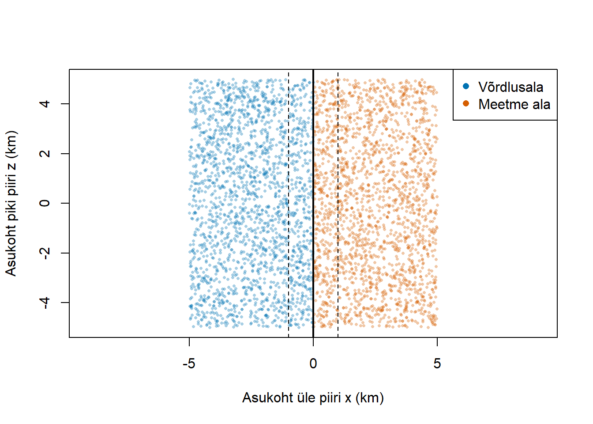
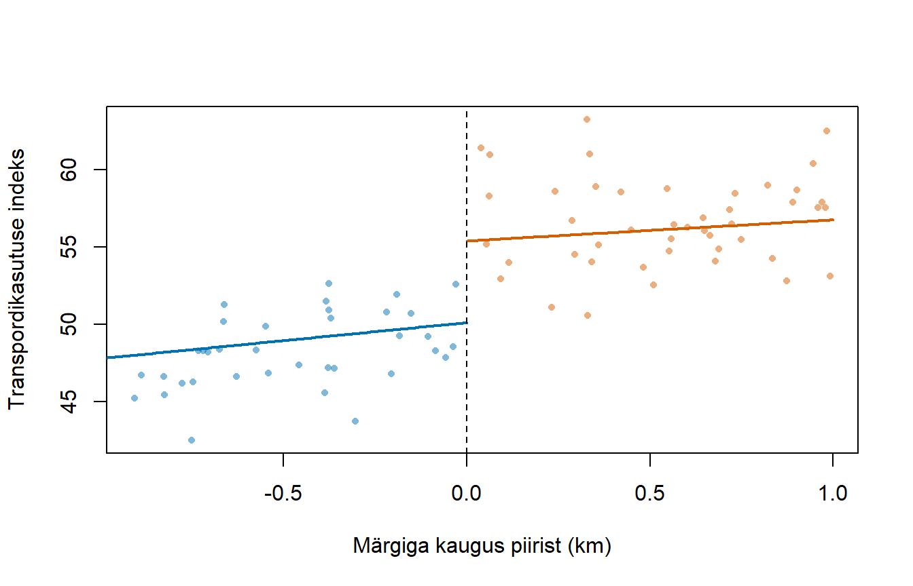

set.seed(2026)
n <- 4000
df <- data.frame(
x = runif(n, -5, 5),
z = runif(n, -5, 5)
)
df$D <- as.integer(df$x >= 0)
df$r <- df$x
tau_true <- 5
df$Y0 <- 50 + 2 * df$x + 3 * df$z + rnorm(n, sd = 3)
df$Y <- df$Y0 + tau_true * df$D8 Regressiooni katkemine ruumis
Ruumiline regressiooni katkemise meetod (spatial regression discontinuity design ehk geographic regression discontinuity design, GRD) kasutab põhjusliku mõju hindamiseks geograafilist piiri. Ühel pool piiri rakendub meede ning teisel pool mitte. Võrreldakse vaatlusi, mis asuvad piiri lähedal selle vastaskülgedel.
Näiteks võib omavalitsus pakkuda elanikele tasuta ühistransporti, samal ajal kui naaberomavalitsus seda ei paku. Kui piiri vahetus läheduses elavad inimesed on muus osas võrreldavad, võiks nende transpordikasutuse erinevus anda teavet meetme mõju kohta. Tegemist on hüpoteetilise näitega: tegelikus uuringus tuleb kontrollida nii elukoha valikut kui ka teisi omavalitsuste erinevusi.
Meetodi alusidee on sama mis tavapärases RDD-s: meetmes osalemine muutub lävendil järsult, kuid potentsiaalsed tulemused peaksid muutuma sujuvalt. Erinevus seisneb selles, et lävend on punktist koosneva arvulise väärtuse asemel joon või kõver kaardil.
| Omadus | Tavapärane RDD | Ruumiline RDD |
|---|---|---|
| Meetme määramine | Näiteks testiskoori alusel | Asukoha alusel |
| Määrav tunnus | Üks arvuline tunnus \(X_i\) | Asukoht \(S_i=(x_i,z_i)\) |
| Lävend | Punkt \(c\) arvteljel | Geograafiline piir \(\mathcal{B}\) |
| Võrreldavad vaatlused | Lävendist veidi all- ja ülalpool | Piiri vastaskülgedel samas piirkonnas |
| Eriline raskus | Võimalik skoori manipuleerimine | Elukoha valik, ruumilised erinevused ja ülekanduvad mõjud |
Ruumilise RDD metoodilist käsitlust pakuvad Keele ja Titiunik (2015). Tuntud majandusteaduslik rakendus on Dell (2010), kes uurib ajaloolise sunnitöösüsteemi pikaajalisi mõjusid selle rakendusala piiri abil.
8.1 Asukoht, piir ja meetmes osalemine
Olgu vaatlusüksuse \(i\) asukoht
\[ S_i=(x_i,z_i), \]
kus \(x_i\) ja \(z_i\) on tasapinnalised koordinaadid. Näiteks võivad need tähistada ida-lääne ja põhja-lõuna suunalist asukohta kilomeetrites. Tegelikes kaardiandmetes tuleb kauguste leidmiseks kasutada sobivat koordinaatsüsteemi või geodeetilisi kaugusi: pikkus- ja laiuskraadi erinevused ei ole otse kilomeetrid.
Geograafiline piir \(\mathcal{B}\) eraldab meetme ala \(\mathcal{A}_1\) võrdlusalast \(\mathcal{A}_0\). Järsku (sharp) ruumilise RDD korral on meetmes osalemine
\[ D_i=\mathbb{1}\{S_i\in\mathcal{A}_1\}. \]
Vaadeldav tulemus on
\[ Y_i=D_iY_i^1+(1-D_i)Y_i^0, \]
kus \(Y_i^1\) ja \(Y_i^0\) on potentsiaalsed tulemused vastavalt meetmega ja meetmeta.
Piir koosneb paljudest punktidest. Seetõttu võib meetme mõju piiri eri osades olla erinev. Näiteks võib sama ühistranspordimeede avaldada linnalähedases piirilõigus suuremat mõju kui hõredalt asustatud piirkonnas.
8.2 Millistel eeldustel saame hinnata põhjuslikku mõju?
Potentsiaalsete tulemuste pidevus
Olgu
\[ m_d(s)=\mathbb{E}[Y_i(d)\mid S_i=s],\qquad d\in\{0,1\}. \]
Peamine eeldus on, et mõlemad funktsioonid \(m_0(s)\) ja \(m_1(s)\) on uuritavas piiripunktis \(b\in\mathcal{B}\) pidevad:
\[ \lim_{\substack{s\to b\\s\in\mathcal{A}_1}}m_d(s) = \lim_{\substack{s\to b\\s\in\mathcal{A}_0}}m_d(s) =m_d(b),\qquad d\in\{0,1\}. \]
See tähendab, et sama piiripunkti poole liikudes ei tohiks meetmeta tulemus ega meetmega tulemus ise hüpata. Vaadeldav tulemus võib hüpata, sest piiril muutub meetmes osalemine.
Näiteks peaksid meetmeta oodatav transpordikasutus, sissetulek ja ligipääs töökohtadele muutuma üle piiri sujuvalt. Kui piir kulgeb mööda jõge, mille ületamiseks puudub sild, võib transpordikasutus erineda ka ilma meetmeta. Selline piir ei pruugi anda usutavat võrdlust.
TähtisLähedus ei taga võrreldavust
Kaks piiri vastaskülgedel asuvat majapidamist võivad paikneda lähestikku, kuid erineda jõukuse, eelistuste või keskkonna poolest. Põhjuslik tõlgendus vajab põhjendatud pidevuse eeldust. Pidevuse eeldus ei tähenda automaatselt, et lõpliku laiusega piirkonnas on meetmes osalemine juhuslik.
Elukoha või ettevõtte asukoha valik
Kui inimesed kolivad teadlikult meetme poolele, võivad piiri vastaskülgede elanikud erineda juba enne tulemuse mõõtmist. Näiteks võivad parema kooli piirkonda kolida jõukamad pered. Siis ei saa laste tulemuste hüpet omistada üksnes koolile.
Oluline on teada, millal piir ja meede tekkisid, millal asukoht määrati ning kas inimesed või ettevõtted said sellele reageerida. Võimaluse korral saab kasutada meetme-eelset asukohta ja meetme-eelseid tunnuseid. Ka ajalooline piir ei taga iseenesest võrreldavust: ränne ja muud ajaloolised protsessid võivad rühmade koosseisu muuta.
Muud piiril muutuvad tegurid
Omavalitsuse või riigi piiril võivad korraga muutuda maksud, avalikud teenused, regulatsioonid ja infrastruktuur. Kui need mõjutavad tulemust, ei näita hinnatud hüpe tingimata ühe konkreetse meetme mõju. See võib väljendada mitme poliitika ja institutsiooni koosmõju.
Ühe meetme mõju eristamiseks on vaja institutsionaalset põhjendust või täiendavat uurimisdisaini. Näiteks võib võrrelda piiril esinevat hüpet enne ja pärast uue meetme rakendamist:
\[ \tau_{\mathrm{muutus}}(b) =\Delta_{\mathrm{pärast}}(b)-\Delta_{\mathrm{enne}}(b), \]
kus \(\Delta_t(b)\) on tulemuse hüpe piiripunktis \(b\) ajal \(t\). Põhjuslik tõlgendus vajab eeldust, et uue meetmeta oleks piiri vastaskülgede erinevus püsinud samana; samaaegne muu muutus võib seda eeldust rikkuda.
Üle piiri kanduvad mõjud
Meede võib mõjutada ka võrdlusala. Näiteks võivad naaberomavalitsuse elanikud kasutada meetme tõttu paranenud transpordiühendusi või võivad ettevõtted teenindada mõlema poole kliente.
Kui tulemus sõltub ka teiste üksuste meetmes osalemisest, ei piisa lihtsast tähistusest \(Y_i(d)\). Piiri hüpe ei pruugi siis väljendada meetme täielikku mõju võrreldes olukorraga, kus meedet poleks kusagil. Uuringus tuleb täpsustada, kelle mõju ja millise võrdlusolukorra suhtes hinnatakse.
8.3 Millist mõju hinnatakse?
Pidevuse ja teiste vajalike eelduste korral on mõju piiripunktis \(b\)
\[ \begin{aligned} \tau(b) &=\mathbb{E}[Y_i^1-Y_i^0\mid S_i=b]\\ &=\lim_{\substack{s\to b\\s\in\mathcal{A}_1}} \mathbb{E}[Y_i\mid S_i=s] -\lim_{\substack{s\to b\\s\in\mathcal{A}_0}} \mathbb{E}[Y_i\mid S_i=s]. \end{aligned} \]
Pideva asukoha korral tõlgendame piiripunkti tingimuslikku keskmist piirväärtuse kaudu. Me ei vaja vaatlusi, mis asuvad täpselt joonel.
Kogu piiri jaoks võib defineerida kaalutud keskmise mõju:
\[ \tau_{\mathcal{B}} =\int_{\mathcal{B}}\tau(b)w(b)\,d\ell(b), \qquad w(b)\geq 0, \qquad \int_{\mathcal{B}}w(b)\,d\ell(b)=1, \]
kus \(d\ell(b)\) tähistab integreerimist mööda piiri pikkust. Kaalud võivad väljendada näiteks sihtpopulatsiooni paiknemist piiri lähedal. Erinevad kaalud võivad anda erineva keskmise mõju, kui mõju varieerub piki piiri.
Tulemus on lokaalne: piiri lähedal hinnatud mõju ei pruugi kehtida piirkonna sisemuses. Seega on tegemist lokaalse hinnanguga piiri lähedal (LATE) .
Kui asukoht muudab üksnes meetmes osalemise tõenäosust, on tegemist hägusa (fuzzy) RDD-ga; nõuetekohase instrumentmuutuja olemasolemasolu korral saab tulemuse hüppe ja osalemise tõenäosuse hüppe suhtest hinnata mõju piiripunktis. (Analoogselt tavapärase häguse disaini puhul mõju hindamisega).
8.4 Kuidas mõju hinnata?
Märgiga kaugus piirist
Defineerime märgiga kauguse:
\[ r_i= \begin{cases} \operatorname{dist}(S_i,\mathcal{B}), & S_i\in\mathcal{A}_1,\\ -\operatorname{dist}(S_i,\mathcal{B}), & S_i\in\mathcal{A}_0. \end{cases} \]
Meetme poolel on kaugus positiivne, võrdlusalas negatiivne ja piiril null. Siis saab kasutada tavapärase RDD-ga sarnast lokaalset lineaarset mudelit:
\[ Y_i=\alpha+\tau D_i+\beta_0r_i+\beta_1D_ir_i+\varepsilon_i, \qquad |r_i|\leq h. \]
Siin \(h\) on kauguse valimiaken (bandwidth). Kordaja \(\tau\) mõõdab hinnatud hüpet kaugusel null; kauguse mõju on võrdlusalas \(\beta_0\) ja meetme alas \(\beta_0+\beta_1\).
Üksnes kauguse kasutamine võib kaotada olulise ruumilise info. Kaks vaatlust võivad mõlemad asuda piirist 100 meetri kaugusel, kuid üks paikneb piiri põhja- ja teine lõunaosas. Kui piiri vastaskülgedel paiknevad vaatlused piki piiri erinevalt, võib taoline kaugusmudel sassi ajada meetme mõju piirkondlike erinevustega.
Võrdlemine sama piirilõigu juures
Üks praktiline võimalus on jagada piir lõikudeks ja võrrelda vaatlusi sama lõigu läheduses:
\[ Y_i=\gamma_{k(i)}+\tau D_i+\beta_0r_i+\beta_1D_ir_i +X_i'\delta+\varepsilon_i, \qquad |r_i|\leq h, \]
kus \(k(i)\) tähistab vaatlusüksusele lähimat piirilõiku ja \(\gamma_{k(i)}\) selle lõigu fikseeritud efekti. \(X_i\) sisaldab meetme-eelseid tunnuseid. Meetme tagajärjel muutunud tunnuste kontrollimine võib eemaldada osa uuritavast mõjust.
Piirilõigu fikseeritud efekt eemaldab lõikude keskmiste tasemete erinevused. See ei kõrvalda automaatselt lõigu sees esinevaid erinevusi. Lõigud peavad olema sisuliselt põhjendatud ja sisaldama piisavalt vaatlusi mõlemal pool piiri. Vajaduse korral võib lubada ka tõusudel ja mõjul lõikude vahel erineda.
Teine võimalus on hinnata piiripunktide ümbruses lokaalseid regressioone mõlema koordinaadi alusel. Nii arvestatakse nii kaugust üle piiri kui ka kaugust piki piiri.
Standardvead ja ruumiline sõltuvus
Lähestikku paiknevaid üksusi võivad mõjutada ühised šokid. Siis võib
\[ \operatorname{Cov}(\varepsilon_i,\varepsilon_j)\ne 0 \]
ka eri vaatlusüksuste korral. Tavalised või üksnes heteroskedastiivsuse suhtes robustsed standardvead ei arvesta sellist sõltuvust.
Sõltuvalt andmetest saab kasutada ruumilist korrelatsiooni arvestavaid standardvigu, näiteks Conley standardvigu, või klasterdada sisuliselt põhjendatud geograafiliste üksuste järgi. Klasterdamine ei lahenda probleemi, kui sõltuvus ulatub üle klastripiiride. Väikese klastrite arvu korral vajab statistiline järeldamine täiendavat tähelepanu.
8.5 Uurimisdisaini kontrollimine
Enne põhjusliku järelduse tegemist tuleks:
- Vaadata kaarti: kus asuvad piir, vaatlused ja hindamisel kasutatav piirkond? Kas mõlema poole vaatlused paiknevad samade piirilõikude läheduses?
- Kontrollida meetme-eelseid tunnuseid ja tulemusi: kas näiteks haridus, eelnev sissetulek või maastik muutub piiril järsult?
- Uurida asukohavalikut: kas meede soodustas kolimist või ettevõtete ümberpaiknemist? Kas andmete katvus erineb piiri vastaskülgedel?
- Muuta valimiakent ja ruumilist spetsifikatsiooni: kas järeldus sõltub ühest kindlast aknast või piirilõikude jaotusest?
- Uurida muid piiril muutuvaid poliitikaid ja ülekanduvaid mõjusid.
- Põhjendada standardvigade valikut ning võimaluse korral kasutada sobivaid platseeboteste.
Märgiga kauguse tiheduse hüpe võib viidata inimeste või ettevõtete sorteerumisele, see tähendab, et nad muudavad oma asukohta tingituna meetme olemasolust. Kuid sama hüppe võivad tekitada ka piiri geomeetria, asustuseks sobiva maa pindala või andmete katvus. Seetõttu ei ole tavaline ühemõõtmeline tiheduse test ruumilises uuringus iseseisev tõend disaini kehtivuse või kehtetuse kohta.
Samuti ei kõrvalda vahetult piiri kõrval paiknevate vaatluste eemaldamine (donut RD) automaatselt sorteerumist. See eemaldab kõige lähemad võrdlused ning muudab piiril oleva mõju hindamise rohkem ekstrapoleerimisest sõltuvaks. Kunstlike piiride abil saadud platseebohinnangud on kasulik diagnostika, kuid ei anna ilma täiendavate vahetatavuse eeldusteta automaatselt kehtivat randomiseerimistesti.
8.6 Lihtne simuleeritud näide R-is
Olukord ja andmete genereerimine
Oletame, et kaks omavalitsust asuvad sirge piiri eri pooltel. Piir on \(x=0\). Parempoolne omavalitsus rakendab tasuta transpordi, vasakpoolne mitte. Tulemus \(Y_i\) on transpordikasutuse indeks.
Koordinaat \(x_i\) mõõdab asukohta üle piiri ning \(z_i\) asukohta piki piiri. Mõlemad on kilomeetrites. Kuna piir on sirge, võrdub märgiga kaugus \(r_i=x_i\).
Genereerime tulemuse mudelist
\[ Y_i^0=50+2x_i+3z_i+\varepsilon_i, \qquad Y_i^1=Y_i^0+5, \qquad \varepsilon_i\sim N(0,3^2). \]
Seega on meetme tegelik mõju kõigile üksustele \(5\). Ilma meetmeta muutub tulemus ruumis sujuvalt. Asukohad genereeritakse sõltumatult ja vead on samuti sõltumatud: selles näites puuduvad sorteerumine, muud piiril hüppavad tegurid ja ruumiline veakorrelatsioon.
Näide kasutab ainult R-i põhifunktsioone ega vaja lisapakette.
Asukohad kaardil
Valime valimiaknaks \(h=1\) kilomeetri. Hindamisel kasutatakse vaatlusi, mis asuvad piirist kuni ühe kilomeetri kaugusel.
h <- 1
varvid <- c("#0072B2", "#D55E00")
plot(df$x, df$z,
col = adjustcolor(varvid[df$D + 1], alpha.f = 0.35),
pch = 16, cex = 0.5,
xlab = "Asukoht üle piiri x (km)",
ylab = "Asukoht piki piiri z (km)", asp = 1)
abline(v = 0, lwd = 2)
abline(v = c(-h, h), lty = 2)
legend("topright",
legend = c("Võrdlusala", "Meetme ala"),
col = varvid, pch = 16, bg = "white")
Mõju hindamine
Hindame valimiaknas lineaarse mudeli, lubades kauguse tõusul piiri eri pooltel erineda. Lisame koordinaadi \(z\), sest tulemus muutub ka piki piiri.
local_df <- subset(df, abs(r) <= h)
m_space <- lm(Y ~ D * r + z, data = local_df)
summary(m_space)
Call:
lm(formula = Y ~ D * r + z, data = local_df)
Residuals:
Min 1Q Median 3Q Max
-7.7253 -1.8874 0.0152 1.8969 8.3949
Coefficients:
Estimate Std. Error t value Pr(>|t|)
(Intercept) 50.09901 0.30481 164.361 < 2e-16 ***
D 5.28666 0.40966 12.905 < 2e-16 ***
r 2.32478 0.53206 4.369 1.4e-05 ***
z 2.97285 0.03489 85.196 < 2e-16 ***
D:r -0.95963 0.70975 -1.352 0.177
---
Signif. codes: 0 '***' 0.001 '**' 0.01 '*' 0.05 '.' 0.1 ' ' 1
Residual standard error: 2.934 on 827 degrees of freedom
Multiple R-squared: 0.9139, Adjusted R-squared: 0.9135
F-statistic: 2195 on 4 and 827 DF, p-value: < 2.2e-16# D kordaja mõõdab hüpet piiril.
ci <- confint(m_space, "D")
data.frame(
tegelik_moju = tau_true,
hinnatud_moju = unname(coef(m_space)["D"]),
usaldusvahemik_alumine = ci[1, 1],
usaldusvahemik_ulemine = ci[1, 2],
vaatlusi = nrow(local_df)
) tegelik_moju hinnatud_moju usaldusvahemik_alumine usaldusvahemik_ulemine
1 5 5.286665 4.482565 6.090764
vaatlusi
1 832Kordaja D on lähedal tegelikule mõjule \(5\), kuid ei pea juhusliku vea tõttu sellega täpselt võrduma. Kuna D * r laiendatakse liikmeteks D + r + D:r, lubab mudel kauguse tõusul eri pooltel erineda. Mõju on meie mudelis piki piiri konstantne.
Näites on lineaarne mudel õigesti spetsifitseeritud ning vead sõltumatud ja sama dispersiooniga. Seetõttu sobib siin lm()-i tavapärane usaldusvahemik. Tegelikes ruumilistes andmetes ei saa neid tingimusi automaatselt eeldada.
Hinnatud hüppe joonis
Et näidata hüpet samas piiripunktis, ennustame tulemuse mõlemal pool piiri asukohas \(z=0\). Hajuvusdiagrammil kuvame ainult vaatlusi, millel \(|z_i|\leq 0.5\), et piki piiri esinev tulemuse muutumine pilti vähem hajutaks.
show_df <- subset(local_df, abs(z) <= 0.5)
plot(show_df$r, show_df$Y,
col = adjustcolor(varvid[show_df$D + 1], alpha.f = 0.5),
pch = 16, cex = 0.7,
xlab = "Märgiga kaugus piirist (km)",
ylab = "Transpordikasutuse indeks")
left <- data.frame(r = seq(-h, 0, length.out = 100), D = 0, z = 0)
right <- data.frame(r = seq(0, h, length.out = 100), D = 1, z = 0)
lines(left$r, predict(m_space, newdata = left),
col = varvid[1], lwd = 2)
lines(right$r, predict(m_space, newdata = right),
col = varvid[2], lwd = 2)
abline(v = 0, lty = 2)
Joonte vahe kaugusel null näitab hinnatud hüpet. Sama koordinaadi \(z=0\) kasutamine tagab, et võrdleme mudeli ennustusi sama piiripunkti juures.
Tundlikkus valimiakna suhtes
aknad <- c(0.5, 1, 1.5, 2)
tundlikkus <- do.call(rbind, lapply(aknad, function(h_i) {
d_i <- subset(df, abs(r) <= h_i)
m_i <- lm(Y ~ D * r + z, data = d_i)
ci_i <- confint(m_i, "D")
data.frame(
aken_km = h_i,
vaatlusi = nrow(d_i),
moju = unname(coef(m_i)["D"]),
alumine = ci_i[1, 1],
ulemine = ci_i[1, 2]
)
}))
knitr::kable(tundlikkus, digits = 3)| aken_km | vaatlusi | moju | alumine | ulemine |
|---|---|---|---|---|
| 0.5 | 415 | 5.114 | 3.980 | 6.249 |
| 1.0 | 832 | 5.287 | 4.483 | 6.091 |
| 1.5 | 1231 | 5.309 | 4.648 | 5.969 |
| 2.0 | 1633 | 5.208 | 4.628 | 5.787 |
Kõik hinnangud on tegeliku mõju ümbruses. Siin on mudel lineaarne kogu piirkonnas, mistõttu suurem aken ei too kaasa nihet, mis tekiks kõvera seose lineaarse sirgega lähendamisel. Tegelikes andmetes võib suurem aken suurendada nihet, kuigi kasutatavate vaatluste arv kasvab.
Kontrollküsimused
- Miks ei piisa kogu parempoolse ja vasakpoolse ala keskmise tulemuse võrdlemisest?
- Mida arvestab regressioonis tunnus
z? - Milline eeldus oleks ohus, kui suurema transpordinõudlusega inimesed koliksid meetme poolele?
- Kas piiril hinnatud mõju saab alati üldistada kogu omavalitsusele?
MärkusVastused
- Ka meetmeta tulemus sõltub koordinaadist \(x\). Kogu alade keskmiste erinevus sisaldab lisaks meetme mõjule ida-lääne suunalist trendi. Piiril hindame mõlema poole tulemuse piirväärtusi.
zarvestab tulemuse muutumist piki piiri. Üksnes kaugus piirist ei kirjelda täielikku asukohta.- Ohus oleks potentsiaalsete tulemuste pidevus, sest elanike koosseis võiks piiril järsult muutuda.
- Ei. Piiri lähedal elavad inimesed ja meetme toime võivad erineda piirkonna sisemusest. Simulatsioonis on mõju kõikjal sama üksnes seetõttu, et määrasime selle nii andmeid genereerides.
8.7 Kirjandus
- Keele, L. ja Titiunik, R. (2015). Geographic Boundaries as Regression Discontinuities. Political Analysis, 23(1), 127–155. https://doi.org/10.1093/pan/mpu014.
- Dell, M. (2010). The Persistent Effects of Peru’s Mining Mita. Econometrica, 78(6), 1863–1903. https://doi.org/10.3982/ECTA8121.
- Cattaneo, M. D., Idrobo, N. ja Titiunik, R. A Practical Introduction to Regression Discontinuity Designs: Extensions. Mitmemõõtmelise RDD ja teiste laienduste käsitlus. https://arxiv.org/abs/2301.08958.